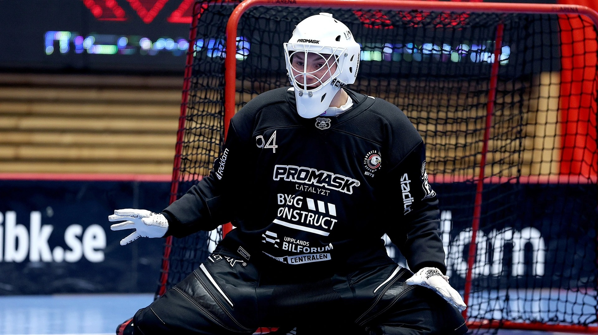
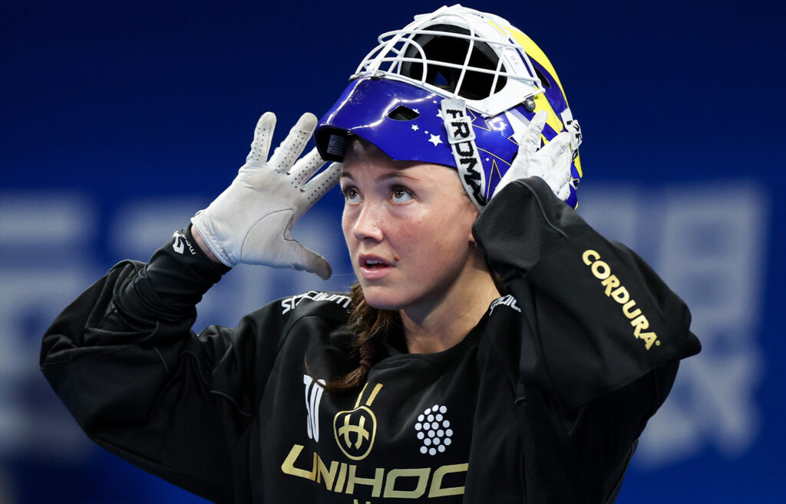
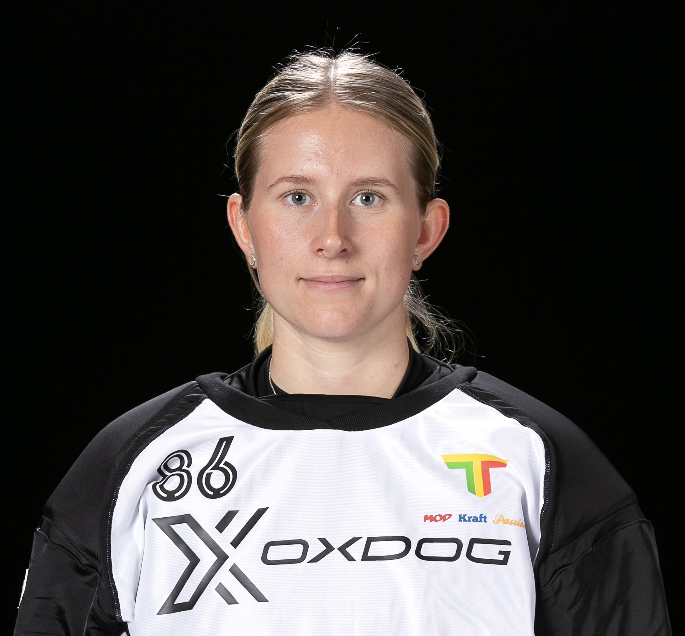

Profiler

Måns Parsjö

Frida Görtz

Kalle Bending

Fokus på målvakter ur ett helhetsperspektiv. Utbildningen är framtagen med Sveriges främsta elitmålvakter.
StartaAtt vara målvakt handlar om att rädda bollen - hur man gör det är mindre viktigt. De främsta målvakterna i världen delar många färdigheter och vanor. Dessa beteenden är skillnaden på att vara bra eller bäst. Utbildningsmaterialet är framtaget tillsammans med Sveriges bästa målvakter på dam- och herrsidan och hjälper dig att förstå vilka färdigheter som krävs för att nå toppen och hur du kan utveckla dem i praktiken.